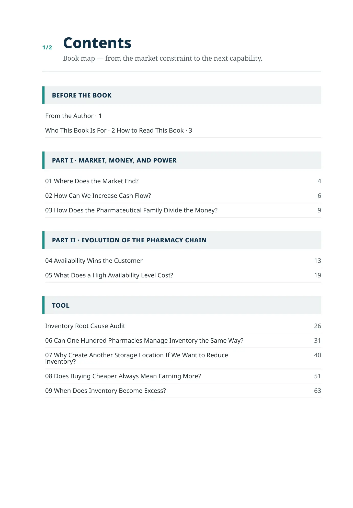
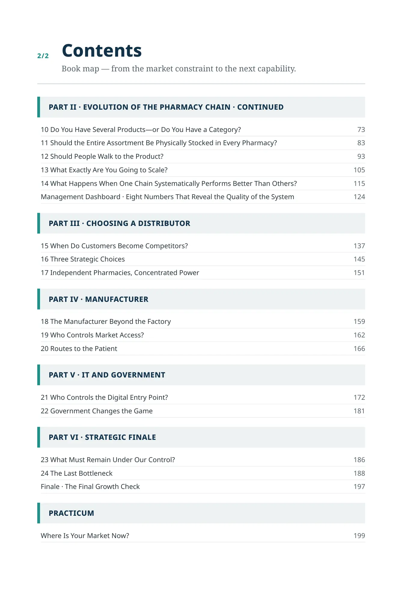

Print Contents
1/2
Contents
Book map — from the market constraint to the next capability.
From the Author · 1
Who This Book Is For · 2 How to Read This Book · 3
01 Where Does the Market End?
4
02 How Can We Increase Cash Flow?
6
03 How Does the Pharmaceutical Family Divide the Money?
9
04 Availability Wins the Customer
13
05 What Does a High Availability Level Cost?
19
Inventory Root Cause Audit
26
06 Can One Hundred Pharmacies Manage Inventory the Same Way?
31
07 Why Create Another Storage Location If We Want to Reduce
inventory?
40
08 Does Buying Cheaper Always Mean Earning More?
51
09 When Does Inventory Become Excess?
63
2/2
Contents
Book map — from the market constraint to the next capability.
10 Do You Have Several Products—or Do You Have a Category?
73
11 Should the Entire Assortment Be Physically Stocked in Every Pharmacy?
83
12 Should People Walk to the Product?
93
13 What Exactly Are You Going to Scale?
105
14 What Happens When One Chain Systematically Performs Better Than Others?
115
Management Dashboard · Eight Numbers That Reveal the Quality of the System
124
15 When Do Customers Become Competitors?
137
16 Three Strategic Choices
145
17 Independent Pharmacies, Concentrated Power
151
18 The Manufacturer Beyond the Factory
159
19 Who Controls Market Access?
162
20 Routes to the Patient
166
21 Who Controls the Digital Entry Point?
172
22 Government Changes the Game
181
23 What Must Remain Under Our Control?
186
24 The Last Bottleneck
188
Finale · The Final Growth Check
197
Where Is Your Market Now?
199